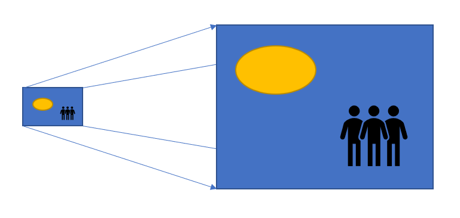
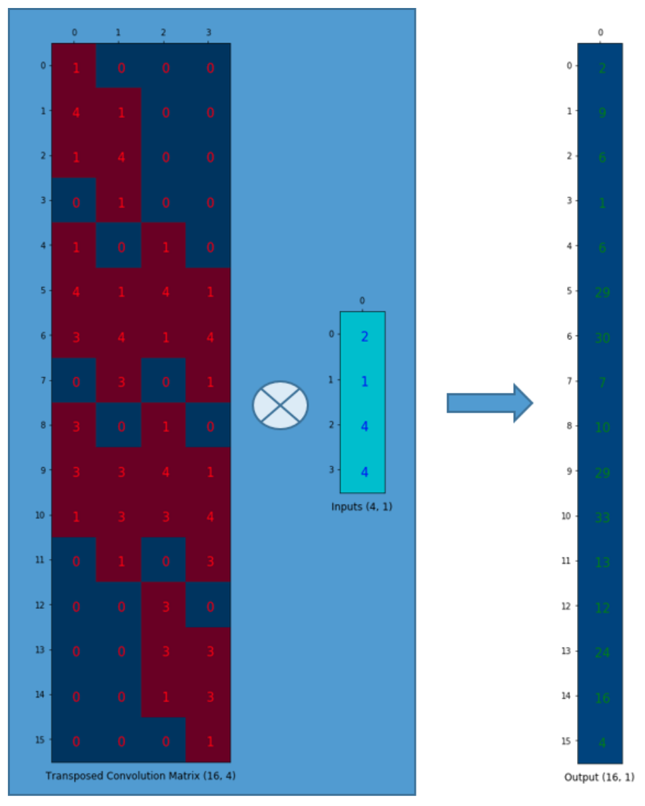

前言
本文翻译自《Up-sampling with Transposed Convolution》，这篇文章对转置卷积和反卷积有着很好的解释。
一、对于上采用的需求
当我们用神经网络生成图片的时候，经常需要将一些低分辨率的图片转换为高分辨率的图片。

对于这种上采样（up-sampling）作，目前有着一些插值方法进行处理：
最近邻插值（Nearest neighbor interpolation）
双线性插值（Bi-Linear interpolation）
双立方插值（Bi-Cubic interpolation）
以上的这些方法都是一些插值方法，需要我们在决定网络结构的时候进行挑选。这些方法就像是人工特征工程一样，并没有给神经网络学习的余地，神经网络不能自己学习如何更好地进行插值，这个显然是不够理想的。
二、为什么是转置卷积
转置卷积（Transposed Convolution）常常在一些文献中也称之为反卷积（Deconvolution）和部分跨越卷积（Fractionally-strided Convolution），因为称之为反卷积容易让人以为和数字信号处理中反卷积混起来，造成不必要的误解，因此下文都将称为转置卷积，并且建议各位不要采用反卷积这个称呼。
如果我们想要我们的网络可以学习到最好地上采样的方法，我们这个时候就可以采用转置卷积。这个方法不会使用预先定义的插值方法，它具有可以学习的参数。理解转置卷积这个概念是很重要的，因为它在若干重要的文献中都有所应用，如：
- 在DCGAN中的生成器将会用随机值转变为一个全尺寸（full-size）的图片，这个时候就需要用到转置卷积。
- 在语义分割中，会使用卷积层在编码器中进行特征提取，然后在解码层中进行恢复为原先的尺寸，这样才可以对原来图像的每个像素都进行分类。这个过程同样需要用到转置卷积。
三、卷积操作
让我们回顾下卷积操作是怎么工作的，并且我们将会从一个小例子中直观的感受卷积操作。假设我们有一个4×4的矩阵，我们将在这个矩阵上应用3×3的卷积核，并且不添加任何填充（padding），步进参数（stride）设置为1，就像下图所示，输出为一个2×2的矩阵。

这个卷积操作在输入矩阵和卷积核中，对每个元素的乘积进行相加。因为我们没有任何填充和使用1为步长，因此我们只能对这个操作进行4次，因此我们的输出矩阵尺寸为2×2。
这种卷积操作使得输入值和输出值之间存在有位置上的连接关系，举例来说，输入矩阵左上方的值将会影响到输出矩阵的左上方的值。更具体而言，3×3的卷积核是用来连接输入矩阵中的9个值，并且将其转变为输出矩阵的一个值的。一个卷积操作是一个多对一（many-to-one）的映射关系。让我们记住这个，我们接下来将会用得着。
四、反过来操作
现在，假设我们想要反过来操作。我们想要将输入矩阵中的一个值映射到输出矩阵的9个值，这将是一个一对多（one-to-many）的映射关系。这个就像是卷积操作的反操作，其核心观点就是用转置卷积。举个例子，我们对一个2×2的矩阵进行上采样为4×4的矩阵。这个操作将会维护一个1对应9的映射关系。
因此就结论而言，卷积操作是多对一，而转置卷积操作是一对多。
但是我们将如何具体操作呢？为了接下来的讨论，我们需要定义一个卷积矩阵（convolution matrix）和相应的转置卷积矩阵（transposed convolution matrix）。
五、卷积矩阵
我们可以将一个卷积操作用一个矩阵表示。这个表示很简单，无非就是将卷积核重新排列到我们可以用普通的矩阵乘法进行矩阵卷积操作。如下图就是原始的卷积核：
我们对这个3×3的卷积核进行重新排列，得到了下面这个4×16的卷积矩阵：

这个便是卷积矩阵了，这个矩阵的每一行都定义了一个卷积操作。下图将会更加直观地告诉你这个重排列是怎么进行的。每一个卷积矩阵的行都是通过重新排列卷积核的元素，并且添加0补充（zero padding）进行的。
为了将卷积操作表示为卷积矩阵和输入矩阵的向量乘法，我们将输入矩阵4×4摊平（flatten）为一个列向量，形状为16×1，如下图所示。
我们可以将这个4×16的卷积矩阵和1×16的输入列向量进行矩阵乘法，这样我们就得到了输出列向量。

这个输出的4×1的矩阵可以重新塑性为一个2×2的矩阵，而这个矩阵正是和我们一开始通过传统的卷积操作得到的一模一样。
简单来说，这个卷积矩阵除了重新排列卷积核的权重之外就没有啥了，然后卷积操作可以通过表示为卷积矩阵和输入矩阵的列向量形式的矩阵乘积形式进行表达。
所以各位发现了吗，关键点就在于这个卷积矩阵，你可以从16（4×4）到4（2×2）因为这个卷积矩阵尺寸正是4×16的，然后呢，如果你有一个16×4的矩阵，你就可以从4（2×2）到16（4×4）了，这不就是一个上采样的操作吗？
六、转置卷积矩阵
我们想要从4（2×2）到16（4×4），因此我们使用了一个16×4的矩阵，但是还有一件事情需要注意，我们是想要维护一个1到9的映射关系。
假设我们转置这个卷积矩阵$C (4×16)$变为$C^T (16×4)$。我们可以对$C^T$和列向量$(4×1)$进行矩阵乘法，从而生成一个16×1的输出矩阵。这个转置矩阵正是将一个元素映射到了9个元素。

这个输出可以塑形为4x4的矩阵：
我们只是对小矩阵$(2×2)$进行上采样为一个更大尺寸的矩阵$(4×4)$。这个转置卷积矩阵维护了一个1个元素到9个元素的映射关系，因为这个关系正表现在了其转置卷积元素上。
需要注意的是：这里的转置卷积矩阵的参数，不一定从原始的卷积矩阵中简单转置得到的，转置这个操作只是提供了转置卷积矩阵的形状而已。
七、总结
转置卷积操作构建了和普通的卷积操作一样的连接关系，只不过这个是从反向方向开始连接的。我们可以用它进行上采样。另外，这个转置卷积矩阵的参数是可以学习的，因此我们不需要一些人为预先定义的方法。即使它被称为转置卷积，它并不是意味着我们将一些现存的卷积矩阵简单转置并且使用其转置后的值。
从本质来说，转置卷积不是一个卷积，但是我们可以将其看成卷积，并且当成卷积这样去用。我们通过在输入矩阵中的元素之间插入0进行补充，从而实现尺寸上采样，然后通过普通的卷积操作就可以产生和转置卷积相同的效果了。你在一些文章中将会发现他们都是这样解释转置卷积的，但是这个因为在卷积操作之前需要通过添加0进行上采样，因此是比较低效率的。
注意：转置卷积会导致生成图像中出现棋盘效应（checkerboard artifacts），这篇文章《Deconvolution and Checkerboard Artifacts》推荐了一种上采样的操作（也就是插值操作），这个操作接在一个卷积操作后面以减少这种现象。如果你的主要目的是生成尽可能少棋盘效应的图像，那么这篇文章就值得你去阅读。